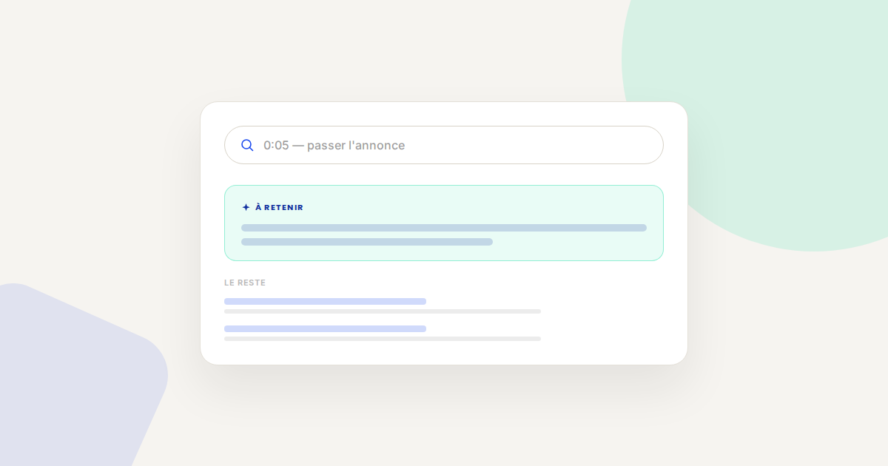
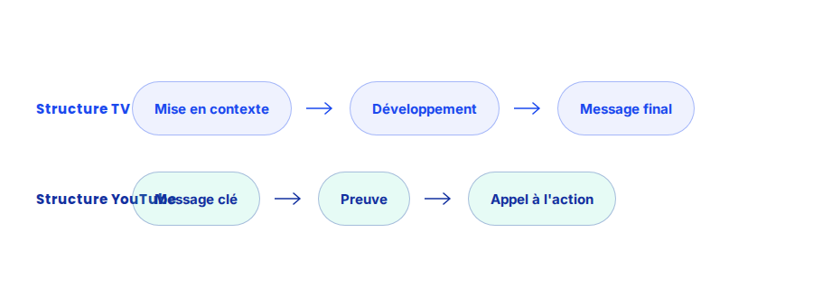

YouTube Ads : capter l'attention dans les 5 premières secondes
Sur une annonce skippable, la décision de rester ou de passer se prend presque instantanément. Une créa qui garde son message principal pour la fin, comme le ferait un spot TV classique, perd la majorité de son audience avant même d'avoir eu l'occasion de le délivrer.

YouTube Ads récompense une structure créative très différente de celle d'un spot publicitaire télévisé, alors que beaucoup d'annonceurs continuent de recycler leurs créas TV telles quelles. Le problème n'est pas la qualité de production, c'est l'ordre dans lequel l'information est délivrée.
Ce qui ne change pas
Le principe reste identique à celui de n'importe quel format publicitaire vidéo : une créa qui ne suscite aucune émotion ni curiosité ne performe pas, quel que soit le placement média. Ce que la logique de social media advertising ne change pas non plus, c'est l'importance d'un ciblage cohérent avec le message — une créa parfaite montrée à la mauvaise audience reste inefficace.
Ce qui change vraiment sur YouTube Ads
- Le message principal doit apparaître dans les 5 premières secondes, pas être révélé progressivement. Sur un format skippable, une part importante des spectateurs qui décident de passer l'annonce le font avant la fin de cette fenêtre.
- La marque doit être visible tôt, pas uniquement à la fin. Une identification tardive prive l'annonce d'une partie de son effet, même auprès des spectateurs qui passent l'annonce avant la fin.
- Le son ne peut pas porter tout le message. Une part significative du trafic mobile visionne sans le son activé au premier instant ; le message clé doit rester compréhensible visuellement, via du texte ou une image forte.
- Le format vertical ou carré n'est plus une option secondaire. Sur mobile et sur Shorts, une créa pensée uniquement pour le format horizontal perd une partie de son impact, voire de sa lisibilité.

Un exemple qui illustre bien la différence
Pour un annonceur qui réutilisait sa créa TV de 30 secondes sur YouTube Ads sans adaptation, restructurer uniquement les 5 premières secondes — en avançant le message clé et le logo, sans retourner le reste de la production — a suffi à faire baisser sensiblement le taux de skip et à améliorer le coût par vue complète, sans nécessiter de nouveau tournage.
Ce qu'il faut faire concrètement
- Réordonnez vos créas existantes avant d'en produire de nouvelles : avancer le message clé dans les 5 premières secondes suffit souvent à améliorer nettement la performance.
- Ajoutez du texte incrusté sur les moments clés pour que le message reste compréhensible sans le son.
- Produisez au minimum une variante verticale pour les placements mobile et Shorts plutôt qu'un simple recadrage du format horizontal.
- Testez plusieurs ouvertures de créa sur le même contenu principal — c'est souvent la variable la plus rentable à tester en premier.
FAQ
Faut-il refaire toute la créa pour l'adapter à YouTube Ads ?
Pas nécessairement. Réorganiser l'ordre des séquences existantes pour avancer le message clé suffit souvent à améliorer significativement la performance, sans nouveau tournage.
Le format bumper (6 secondes) est-il plus efficace que le format skippable ?
Ils répondent à des objectifs différents. Le bumper renforce la notoriété avec un message très court et non skippable ; le format skippable permet un message plus développé pour les spectateurs qui restent volontairement.
Comment savoir si une créa capte suffisamment l'attention au début ?
Le taux de vue à 25 % de la durée totale et le taux de skip avant 5 secondes sont les deux indicateurs les plus révélateurs, disponibles directement dans les rapports Google Ads.
Envie d'optimiser vos campagnes YouTube Ads ?
Pour aller plus loin, voir la page YouTube Ads, la page SMA, et la page CRO.
Pour continuer sur ce sujet.